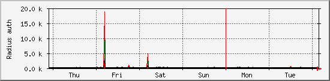
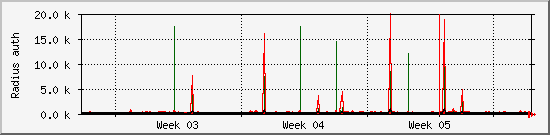
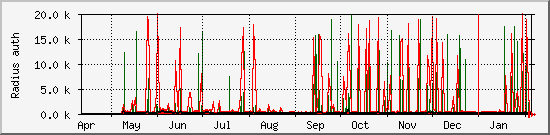

Radius access count Access_Requests Access_Accepts
The statistics were last updated Wednesday, 6 February 2019 at 4:05,
at which time 'unknown' had been up for 4:05AM up 13 days, 23:14, 2 users, load averages: 2.75, 1.95, 1.41.
`Daily' Graph (5 Minute Average)

|
Max |
Average |
Current |
| Access accepts: |
411 Requests |
64 Requests |
50 Requests |
| Access requests: |
556 Requests |
118 Requests |
102 Requests |
`Weekly' Graph (30 Minute Average)

|
Max |
Average |
Current |
| Access accepts: |
9446 Requests |
71 Requests |
58 Requests |
| Access requests: |
19 k Requests |
135 Requests |
108 Requests |
`Monthly' Graph (2 Hour Average)

|
Max |
Average |
Current |
| Access accepts: |
18 k Requests |
73 Requests |
57 Requests |
| Access requests: |
20 k Requests |
135 Requests |
105 Requests |
`Yearly' Graph (1 Day Average)

|
Max |
Average |
Current |
| Access accepts: |
20 k Requests |
66 Requests |
70 Requests |
| Access requests: |
20 k Requests |
141 Requests |
127 Requests |
| RED ### |
Total access accepts |
| BLACK ### |
Total access requests |
| DARKGREEN ### |
Maximal 5 Minute Incoming requests |
| VIOLET ### |
Maximal 5 Minute Incoming accepts |